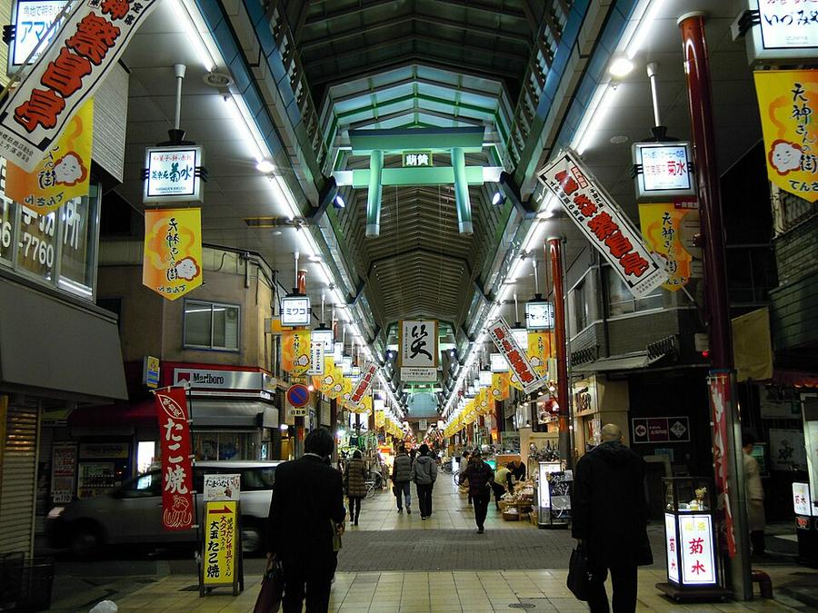
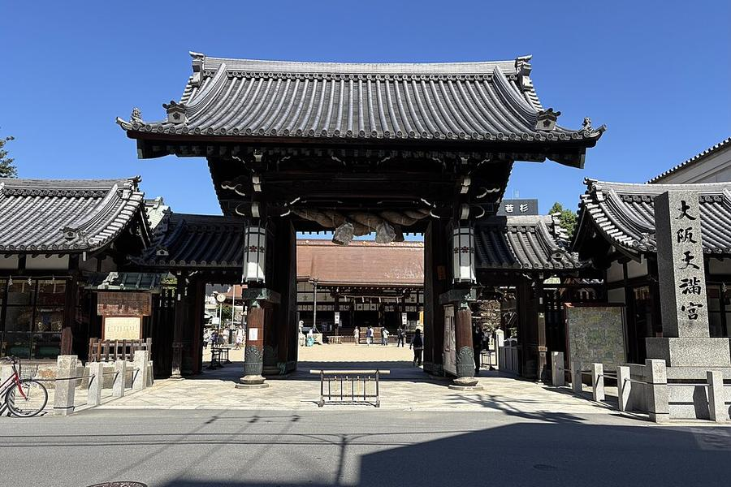
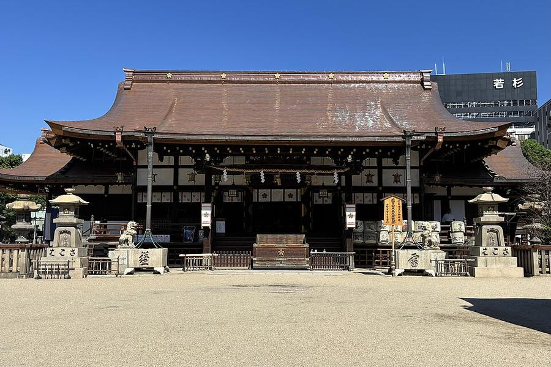
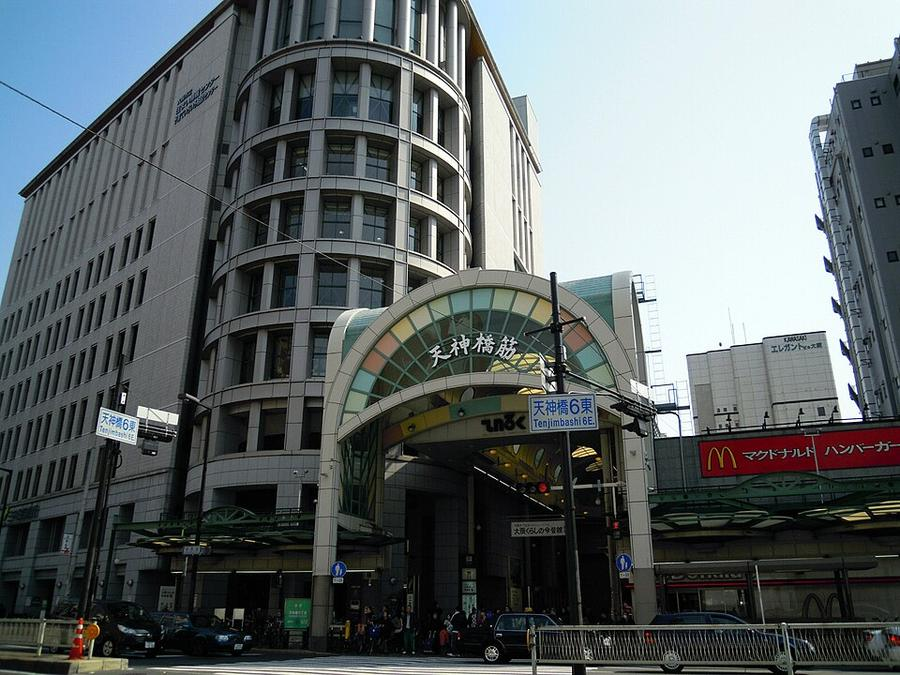

3Tenjinbashisuji и Osaka Tenmangu




Tenjinbashisuji - около 2,6 км крытой улицы (рекламируется как самая длинная в Японии), 600-800 лавок по разным источникам. Это не торговый центр, а обычная жизнь района: рыба, овощи, кушикацу, якитори, старые кафе. В дождь идёшь под крышей.
У южной части - святилище Osaka Tenmangu, основано в 949 году, нынешний главный зал 1843 года. Здесь проходит летний Tenjin Matsuri (24-25 июля), один из трёх главных фестивалей Японии. 25.10 в святилище осенний праздник - будет людно.
| Часы | лавки - у каждой свои; святилище 9:00-17:00 (osaka-info) |
|---|---|
| Вход | бесплатно |
| Наши даты | 25.10 в святилище осенний праздник - людно |
| На месте | 1-1,5 ч |
| Дождь | ☂️ крытая улица, в дождь - да |
Источник часов и цен: osakatemmangu.or.jp, osaka-info.jp, tenjin3.com; число лавок: ja.wikipedia (~600) и osaka-info (~800)
Как добраться от отеля
- Сверху вниз: метро Tanimachi (фиолетовая) от Higashi-Umeda на Dainichi (大日), платформа 2: Nakazakicho → Tenjimbashisuji 6-chome, 3 мин. Дальше пешком на юг по крытой улице ~23 мин до святилища. Обратно - 4 мин до Minami-morimachi и 1 остановка до Higashi-Umeda.
- Только святилище: Tanimachi от Higashi-Umeda 1 остановка до Minami-morimachi (2 мин) + 4 мин пешком.
Видео


.jpg){kind=link}


Рядом


Фото: Wikimedia Commons, автор и лицензия под каждым. Поезда: Yahoo!乗換案内 на 24-26.10.2026, пешие отрезки: OSRM. Часы и цены проверены 25.10.2026 12:49 JST. ← ко всем местам